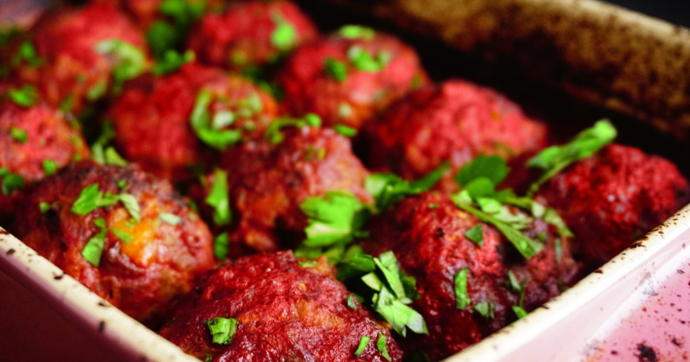
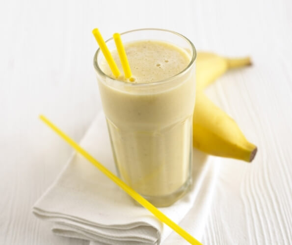

Овочевий суп
120 ккал. Смачний суп із сезонних овочів.
Інгредієнти: картопля, морква, цибуля, зелень
Білки: 3 г | Жири: 2 г | Вуглеводи: 15 г
Грибний крем-суп
110 ккал. Ароматний суп із білих грибів і вершків.
Інгредієнти: печериці, картопля, вершки
Білки: 3 г | Жири: 7 г | Вуглеводи: 8 г
Гарбузовий крем-суп
105 ккал. Кремовий суп з вершками і гарбузом
Інгредієнти: гарбуз, вершки, цибуля, сіль, мускатний горіх
Білки: 2 г | Жири: 5 г | Вуглеводи: 12 г
Курячий бульйон
85 ккал. Легкий бульйон з куркою та зеленню
Інгредієнти: курка, морква, цибуля, селера, зелень
Білки: 7 г | Жири: 3 г | Вуглеводи: 2 г
Томатний суп
95 ккал. Кисло-солодкий суп із свіжих томатів
Інгредієнти: помідори, базилік, часник, цибуля.
Білки: 2 г | Жири: 3 г | Вуглеводи: 14 г
Суп-пюре з цвітної капусти
98 ккал. Легка страва з м’яким смаком.
Інгредієнти: цвітна капуста, молоко, часник, сіль.
Білки: 3 г | Жири: 5 г | Вуглеводи: 10 г
Гаспачо
70 ккал. Холодний іспанський суп зі свіжих овочів.
Інгредієнти: помідори, огірок, перець, оливкова олія.
Білки: 2 г | Жири: 3 г | Вуглеводи: 9 г
Суп з квасолею
145 ккал. Поживний суп з білою квасолею.
Інгредієнти: біла квасоля, морква, сіль, цибуля.
Білки: 8 г | Жири: 4 г | Вуглеводи: 18 г
Сирний суп з грибами
160 ккал. Насичений смаком суп з плавленим сиром.
Інгредієнти: печериці, сир плавлений, картопля, вершки.
Білки: 6 г | Жири: 10 г | Вуглеводи: 18 г
Рис з овочами
130 ккал. Смажений рис з морквою та горошком
Інгредієнти: рис, морква, зелений горошок, кукурудза, соєвий соус
Білки: 5 г | Жири: 3 г | Вуглеводи: 35 г
Локшина з тофу
180 ккал. Локшина з овочами та соєвим соусом
Інгредієнти: локшина, тофу, броколі, морква, соєвий соус
Білки: 10 г | Жири: 6 г | Вуглеводи: 30г
Плов з куркою
210 ккал. Ароматний плов з курячим м’ясом
Інгредієнти: Рис, куряче філе, морква, цибуля, спеції
Білки: 12 г | Жири: 8 г | Вуглеводи: 24г
Фунчоза з овочами
140 ккал.Легка азіатська страва з рисової локшини
Інгредієнти: Фунчоза, перець, огірок, морква, кунжут
Білки: 3 г | Жири: 2 г | Вуглеводи: 28г
Рис з креветками
190 ккал. Морський рис з ароматними спеціями
Інгредієнти: Рис, креветки, часник, соєвий соус, зелень
Білки: 11 г | Жири: 4 г | Вуглеводи: 27г
Смажений рис з яйцем
160 ккал. Класичний азіатський рис
Інгредієнти:Варений рис, яйце, зелений лук, соєвий соус
Білки:6 г | Жири: 5 г | Вуглеводи: 22г
Соба з грибами
160 ккал. Гречана локшина соба з печерицями в соєво-кунжутному соусі.
Інгредієнти: локшина соба, печериці, соєвий соус, кунжут, цибуля.
Білки:6 г | Жири: 4 г | Вуглеводи: 23г
Кисло-солодка локшина
185 ккал.Локшина у пікантному кисло-солодкому соусі з овочами.
Інгредієнти: локшина, перець, ананас, морква, соус чилі, томатна паста.
Білки:5 г | Жири: 6 г | Вуглеводи: 28г
Локшина з куркою по-тайськи
250 ккал. Пряна локшина з соусом та арахісом
Інгредієнти: Рисова локшина, курка, соус пад тай, арахіс, лайм
Білки: 13 г | Жири: 10 г | Вуглеводи: 28г
Курка гриль
200 ккал. Запечена курка з прянощами
Інгредієнти: курка, спеції, оливкова олія
Білки: 25 г | Жири: 10 г | Вуглеводи: 0г

Тефтелі з індички
150 ккал. Індичка в томатному соусі
Інгредієнти: курка, спеції, оливкова оліяіндичка, яйце, панірувальні сухарі, томатний соус
Білки: 20 г | Жири: 8 г | Вуглеводи: 5 г
Стейк із яловичини
250 ккал. Соковитий стейк середньої прожарки.
Інгредієнти: яловичина, оливкова олія, розмарин, сіль, перець.
Білки: 26 г | Жири: 16 г | Вуглеводи: 0 г
Котлета по-київськи
290 ккал. Соковита куряча котлета з маслом усередині.
Інгредієнти: куряче філе, вершкове масло, панірувальні сухарі, яйце, борошно.
Білки: 22 г | Жири: 18 г | Вуглеводи: 10 г
Печеня зі свинини
320 ккал. Ароматна мʼясна печеня з овочами.
Інгредієнти: свинина, картопля, морква, цибуля, спеції.
Білки: 22 г | Жири: 20 г | Вуглеводи: 12 г
Гуляш із телятини
230 ккал. Насичений угорський гуляш із м’якою телятиною.
Інгредієнти: телятина, цибуля, паприка, томати, спеції.
Білки: 24 г | Жири: 12 г | Вуглеводи: 6 г
Курячі стегенця в духовці
260 ккал. Запечені в маринаді з трав.
Інгредієнти: курячі стегенця, гірчиця, мед, соєвий соус, часник.
Білки: 23 г | Жири: 17 г | Вуглеводи: 5 г
Мʼясо по-французьки
330 ккал. Запечена свинина з сиром та овочами.
Інгредієнти: свинина, цибуля, помідори, сир, майонез.
Білки: 21 г | Жири: 25 г | Вуглеводи: 7 г
Свинячі реберця BBQ
350 ккал. Пікантні ребра в соусі барбекю..
Інгредієнти: свинячі ребра, соус BBQ, спеції.
Білки: 22 г | Жири: 28 г | Вуглеводи: 7 г
Запечений лосось
220 ккал. Лосось із лимоном та зеленню
Інгредієнти: лосось, лимон, зелень, оливкова олія
Білки: 23 г | Жири: 15 г | Вуглеводи: 0 г
Тунець на грилі
180 ккал. Філе тунця на грилі
Інгредієнти: філе тунця, спеції, лимон
Білки: 23 г | Жири: 15 г | Вуглеводи: 0 г
Риба в карі соусі
210 ккал. Пікантна риба в кокосовому соусі карі
Інгредієнти: біла риба, кокосове молоко, паста карі, цибуля
Білки: 22 г | Жири: 13 г | Вуглеводи: 5 г
Крабовий салат
150 ккал. Легкий салат з крабовими паличками
Інгредієнти: крабові палички, кукурудза, рис, яйце, майонез
Білки: 12 г | Жири: 7 г | Вуглеводи: 12 г
Креветки з часником
170 ккал. Смажені креветки з часником та зеленню
Інгредієнти: креветки, часник, петрушка, оливкова олія
Білки: 20 г | Жири: 10 г | Вуглеводи: 1 г
Кальмари на грилі
160 ккал. Соковиті кальмари зі спеціями
Інгредієнти: кальмари, лимон, часник, зелень
Білки: 21 г | Жири: 6 г | Вуглеводи: 2 г
Рибні тефтелі
190 ккал. Тефтелі з білої риби в соусі
Інгредієнти: філе риби, яйце, цибуля, томатний соус
Білки: 18 г | Жири: 9 г | Вуглеводи: 7 г
Морський коктейль
200 ккал. Мікс морепродуктів у вершковому соусі
Інгредієнти: мідії, кальмари, креветки, вершки
Білки: 22 г | Жири: 12 г | Вуглеводи: 3 г
Суші з лососем
210 ккал. Класичні роли з рисом та сирим лососем
Інгредієнти: рис, лосось, норі, рисовий оцет
Білки: 18 г | Жири: 8 г | Вуглеводи: 20 г
Фруктовий салат
90 ккал. Салат з яблуками, бананом і ківі
Інгредієнти: яблуко, банан, ківі, йогурт
Білки: 2 г | Жири: 1 г | Вуглеводи: 22 г
Йогуртовий мус
110 ккал. Легкий десерт із йогурту та ягід
Інгредієнти: йогурт, полуниця, малина, мед, желатин
Білки: 4 г | Жири: 3 г | Вуглеводи: 15 г
Шоколадний пудинг
180 ккал. Кремовий пудинг з чорного шоколаду
Інгредієнти: темний шоколад, молоко, крохмаль, цукор
Білки: 4 г | Жири: 9 г | Вуглеводи: 20 г
Сирники
230 ккал. Традиційна страва з сиру
Інгредієнти: сир, яйце, борошно, ваніль
Білки: 10 г | Жири: 10 г | Вуглеводи: 20 г
Сирна запіканка
200 ккал. Десерт з сиру та манки
Інгредієнти: сир, яйця, манка, родзинки
Білки: 12 г | Жири: 8 г | Вуглеводи: 18 г
Зелений смузі
95 ккал. Напій з шпинатом, яблуком і бананом
Інгредієнти: шпинат, яблуко, банан, вода
Білки: 2 г | Жири: 0.5 г | Вуглеводи: 22 г
Апельсиновий сік
45 ккал. Свіжовичавлений сік
Інгредієнти: апельсини
Білки: 1 г | Жири: 0 г | Вуглеводи: 10 г

Молочний коктейль
150 ккал. Напій з молока та банану
Інгредієнти: молоко, банан, мед
Білки: 6 г | Жири: 4 г | Вуглеводи: 24 г
Кава з молоком
60 ккал. Класичне поєднання
Інгредієнти: кава, молоко, цукор
Білки: 2 г | Жири: 2 г | Вуглеводи: 8 г